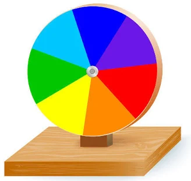
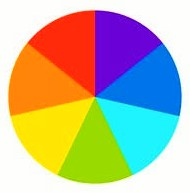

💡
1. Luz branca
A luz branca é composta por diferentes frequências do espectro visível.
Descubra como as cores do espectro visível podem se misturar e produzir a sensação de luz branca.
No século XVII, Isaac Newton realizou experiências com prismas e luz solar. Ao passar por um prisma, a luz branca se separava em diferentes cores, formando um espectro semelhante ao arco-íris.
Newton percebeu que essas cores eram componentes da luz branca. Seus estudos sobre óptica foram publicados posteriormente, incluindo a obra Opticks, de 1704.

A luz branca é composta por diferentes frequências do espectro visível.
Um prisma pode separar a luz branca em diferentes componentes por dispersão.
Ao girar rapidamente, as regiões coloridas se sucedem tão depressa que nosso sistema visual integra os estímulos.
As cores são percebidas juntas, produzindo uma aparência esbranquiçada no disco.
O fenômeno está relacionado à forma como nosso sistema visual processa estímulos que mudam rapidamente. Por isso, quando o disco gira com velocidade suficiente, não percebemos cada setor separadamente.
Use um círculo dividido em setores e pinte as cores do espectro visível.
Faça um furo no centro e coloque um lápis, eixo ou outro suporte adequado.
Faça o disco girar em um local seguro e observe as cores.
Com o aumento da velocidade, as cores parecem se juntar.

Clique no cartão para virar e revelar a resposta.